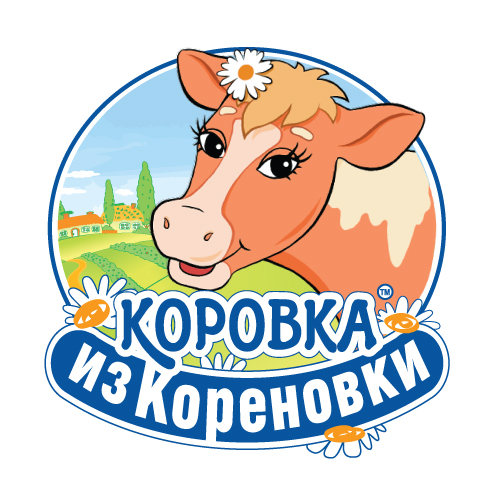

Добро пожаловать на сайт Кореновского молочно-консервного комбината – производителя самого вкусного сгущенного молока и самой душевной цельномолочной продукции. Входящий в группу компаний РЕННА, Кореновский молочно-консервный комбинат (КМКК),– один из лидеров молочного рынка Южного Федерального Округа России. КМКК выпускает как любимейшую в народе марку «Коровка из Кореновки», так и относительно новые торговые марки «Густияр», «Руслада», «Советское». Тысячи сотрудников компании постоянно заботятся о том, чтобы у наших клиентов и потребителей был самые лучшие, натуральные и свежие молочные продукты.
Надеемся, что Вы найдете на нашем сайте много интересной и полезной для Вас информации.
Ждем Ваших предложений: market@korenovka.com
